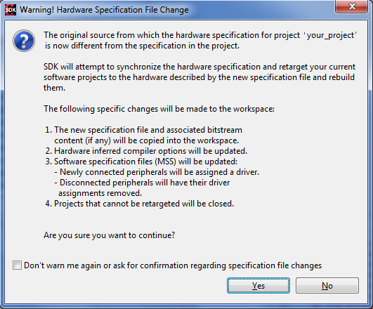
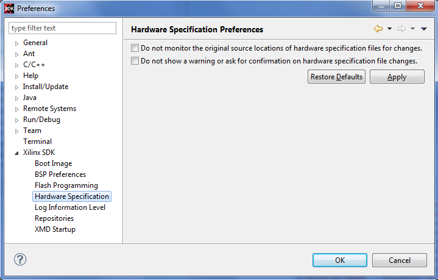

If you are developing both the hardware (using Vivado® Design Suite) and software at the same time, you might want to use SDK to monitor any change to the original hardware specification file that is exported from Vivado Design Suite. The hardware project in SDK maintains the link to the original hardware specification file and monitors the file for changes that affect software projects for that hardware. This includes changes such as:
When a change is made to the original hardware specification file used by the hardware project, SDK opens the Warning! Hardware Specification File Change dialog box.

Click Yes to update your project. SDK does the following:
If you do not want to update your SDK projects, click No. The source hardware specification file will no longer be monitored for changes. To re-enable monitoring, select Window > Preferences > Xilinx SDK > Hardware Specification and unselect the Do not monitor the original source locations of hardware specification file for changes check box.

If you want SDK to automatically update your SDK projects without warning you when the source hardware specification file changes, check the Do not show a warning or ask for confirmation on hardware specification file changes check box in the Preferences dialog box.
If the source hardware specification file was moved or removed from the original location or if the SDK projects were moved to another machine where the source hardware specification file is no longer accessible, SDK stops monitoring the source hardware specification file and removes the internal association of the SDK hardware project to the source hardware specification file.